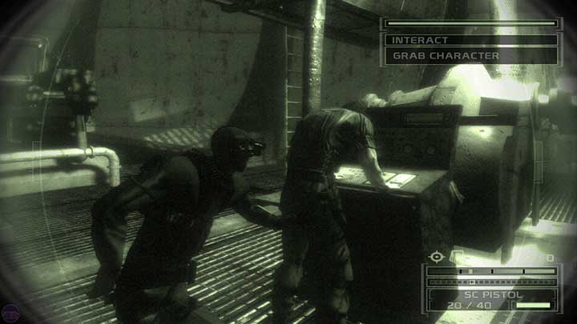
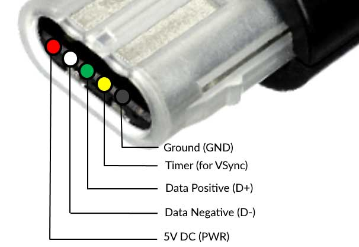

Convert the connection for an original XBOX (C-type or S-type) joypad to standard USB for PC
Microsoft's original XBOX console was closer to a custom-built PC than most other consoles; it used intel chips, had a hard disk, and among other features, it used a properietary modification of USB as a connection for its peripherals. The controllers (the C-Type, S-Type, light gun, etc) use the USB protocol (and hardware) to communicate with the console, even though the physical shape of the connectors looks different, and an extra connector (and therefore wire) is present.
A majority of recent PC Games for Windows tend to use XInput as a standard lbary for gamepad input (although other libraries do exist and are used in some games) - and to ensure compatibility with devices, XInupt specifications require that
pads conform to following values when reading from or writing to (in the case of vibrations) the pad:
| Value Range | Deadzone | |
|---|---|---|
| Left/Right Trigger | 0 .. 255 (single axis) | ≤ 30 (single axis) |
| Left thumbstick | -32768 .. 32767 (per axis) | -7849 .. 7849 (per axis) |
| Right thumbstick | -32768 .. 32767 (per axis) | -8689 .. 8689 (per axis) |
| Left/Right Vibration Motor | 0 .. 65535* (linear) | n/a |
Anyway - the main point here is that games pre-dating XInput and (and its pad specifications) may either misunderstand or reject XInput data from XInput pads.
These games may require binary value triggers (excluding the tolerance of a deadzone, their values may be stored as a bit value, zero or nonzero), or lower/higher sensitivity sticks. One such example is Tom Clancy's Splinter Cell: Chaos Theory - D-Pad, button and thumbstick values are the same using XInput joypads, but the analog triggers of an XInput pad (0 .. 255) will not function in-game, as it expects zero/nonzero values (binary/button triggers).

The game requests a joypad which will read as a binary/button trigger but has similar values with XBOX 360 XInput buttons and D-Pads. Enter the original XBOX controller (and an odd physical connection which seemingly won't connect to a PC)....
The mod requires some wire-stripping and soldering, and some heat-shrink sleeves help keep the work clean and safe., Driver work requires a litle Windows configuration. Requirements:
Note: The target platform is IBM PC Compatible, running Windows 10 64-bit, build 1803
The project will use both ends of the extension cable, creating a 'breakaway' midpoint inline. This allows the controller to continue being used with the XBOX (minus the timing functionality, which is only needed for light gun accessories).
As mentioned above, the XBOX joypad uses a modified version of USB - the cable has the base four lines (D+, D-, GND, PWR), and additional line, used for timing the light gun accessory to the vertical blank (VSYNC) of the output display (remember, this console was designed to use CRT displays). Just by looking at the connector, it's not too obvious from the shape that this is USB-based, but it is possible to see the 5 connector plates (like the 4 standard USB plates on a connector).

The extra cable (yellow / VSYNC) is used for timing with special controller accessories (such as the light gun etc) to time the controller with the vertical screen blank; for the purposes of using the joypad, this cable can be removed, or at least disabled.
The cable needs to be cut at an appropriate point (nearer the connectors, further from the pad is better to preserve cable length even using the new connector). Inside the main cable is a metallic coating for shielding, and five wires represented in the above photo. The outer coating needs to be stripped back 10-20mm for each of the newly-cut parts. This shows the internal red/black/green/white/yellow cables. Each of these cables (except yellow) needs to be stripped back by about 5mm.
The USB extension cable also needs to be cut, and stripped back in the same fashion, leaving the four (red/black/green/white) internal cables stripped.